OS Part 3.2 Focus
Take the top todos
- network ( FOCUS )
Script to create in Azure
domain
-
subnets
-
aro
-
A logic app to create the remaining cluster
3 worker nodes
-
3 Master nodes
-
Set dns names to all machines
start with one addocpdns
-
set a records for OCP
-
and srv records systems to talkt o each other over ports
-
apache ( web Server )
Script to create in linux
sudo apt update
-
sudo apt install apache2 -y
-
Add this to bootstrap code in storage
-
Use scp to access the machine
GPT
Azure Network Setup Instructions
-
Create Domain and Subnets: Initialize the domain and configure the subnets within your Azure environment.
-
Deploy Azure Red Hat OpenShift (ARO): Set up an ARO instance to manage your Kubernetes deployments.
`az provider register --namespace Microsoft.RedHatOpenShift
az account set --subscription 2cb217c1-366d-41c0-8934-3f82869320d8
Variables for your Azure environment
$resourceGroupName="Openshift"
$location="uk-south"
$domainName="openshift.devops.engineering"
$vnetName="openshiftvnet"
$subnetName="openshiftsubnet"
$aroClusterName="devopsengineering"
Create a resource group
az group create --name $resourceGroupName --location $location
Create a virtual network with a subnet for ARO
az network vnet create --resource-group $resourceGroupName --name $vnetName --address-prefixes 10.0.0.0/22 --subnet-name $subnetName --subnet-prefix 10.0.0.0/24
Create a DNS zone
az network dns zone create --name $domainName --resource-group $resourceGroupName
Deploy Azure Red Hat OpenShift (ARO)
First, create a service principal for ARO
$aroServicePrincipal=$(az ad sp create-for-rbac --skip-assignment)
Extract appId and password from the service principal output
$appId=$(echo $aroServicePrincipal | jq -r '.appId')
$appSecret=$(echo $aroServicePrincipal | jq -r '.password')
Create the ARO cluster
az aro create --resource-group $resourceGroupName --name $aroClusterName --vnet $vnetName --master-subnet $subnetName --worker-subnet $subnetName --client-id $appId --client-secret $appSecret --location $location
Output the cluster's console URL and credentials
echo "ARO Cluster is deployed. Access your cluster here:"
az aro show --name $aroClusterName --resource-group $resourceGroupName --query "consoleProfile.url" -o tsv
az aro list-credentials --name $aroClusterName --resource-group $resourceGroupName
`
this creates the cluster >>> try at the start
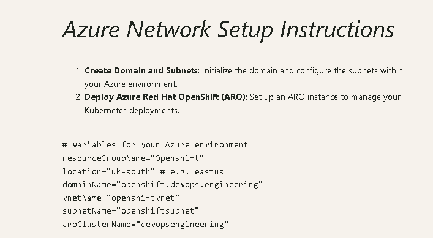
test on the cloud shell
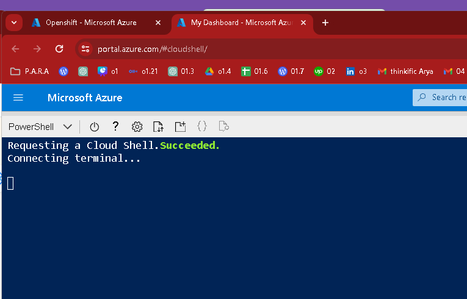
bulk copy paste
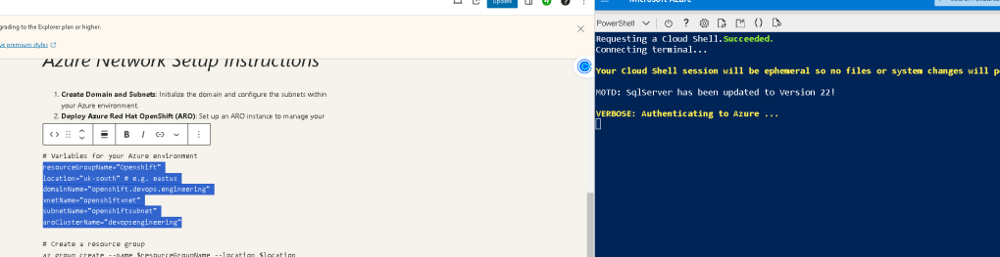
PS /home/rifat> aroClusterName="devopsengineering"
aroClusterName=devopsengineering: The term 'aroClusterName=devopsengineering' is not recognized as a name of a cmdlet, function, script file, or executable program.
Check the spelling of the name, or if a path was included, verify that the path is correct and try again.
PS /home/rifat>
It looks like you're using PowerShell and encountered an issue with setting a variable. In PowerShell, variables are assigned using the $ prefix and without spaces around the = sign. Here's how you should declare and set the variable aroClusterName in PowerShell:
$aroClusterName = "devopsengineering"
In your previous attempt, it seems like there was an attempt to reuse the syntax suitable for shells like Bash in a PowerShell environment, which caused the error. For PowerShell, always ensure you use $ before the variable name and directly assign values with = without any spaces around it. Here’s a brief fix to adjust Bash commands into PowerShell syntax:
Set up variable for ARO cluster name
$aroClusterName = "devopsengineering"
Example usage of the variable in a command (hypothetical command)
Write-Output "The ARO Cluster Name is set to: $aroClusterName"
This should correctly set the variable in PowerShell and allow you to proceed without errors. If you have other commands to translate from Bash to PowerShell, I can help with that too!
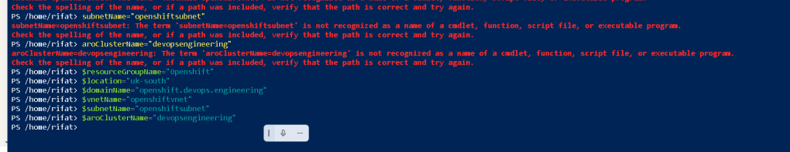
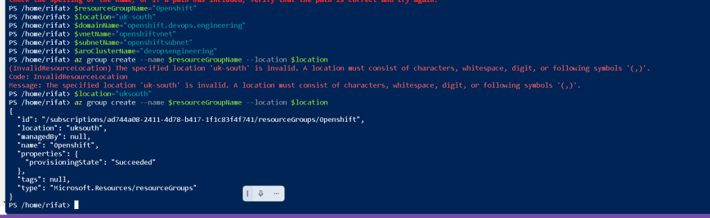
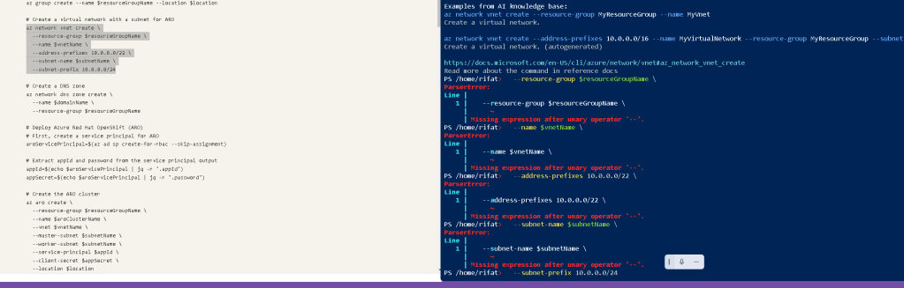
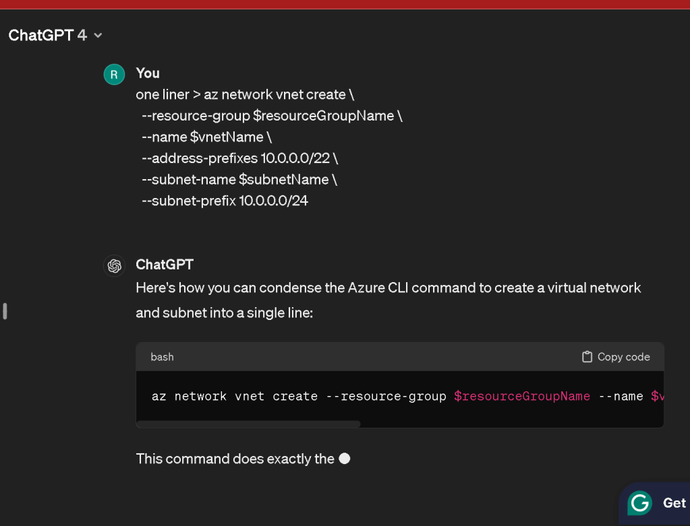
Here's how you can condense the Azure CLI command to create a virtual network and subnet into a single line:
az network vnet create --resource-group $resourceGroupName --name $vnetName --address-prefixes 10.0.0.0/22 --subnet-name $subnetName --subnet-prefix 10.0.0.0/24
This command does exactly the same thing as your original command, just formatted to be on one line for easier reading or inclusion in scripts where line breaks might be less desirable. Make sure you replace $resourceGroupName, $vnetName, and $subnetName with the actual values you want to use for your resource group, virtual network, and subnet names.
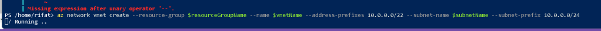
before
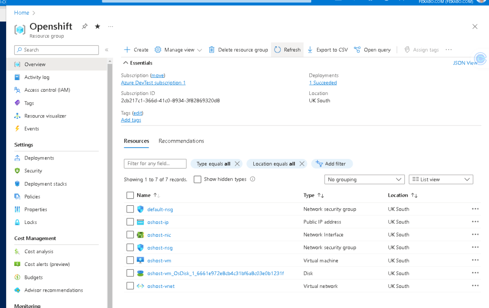
after
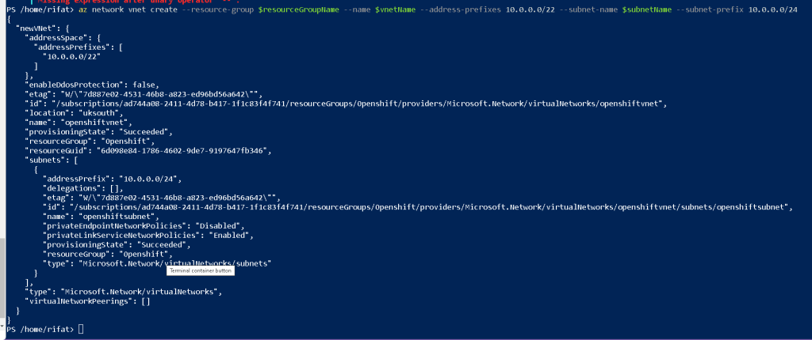
Wring resource group
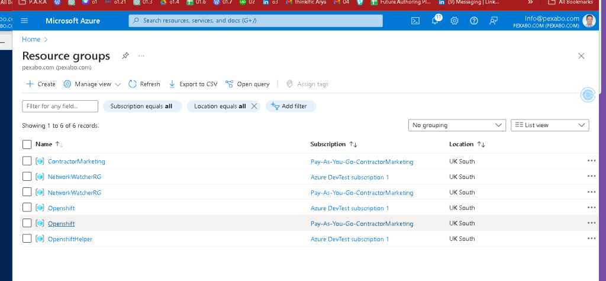
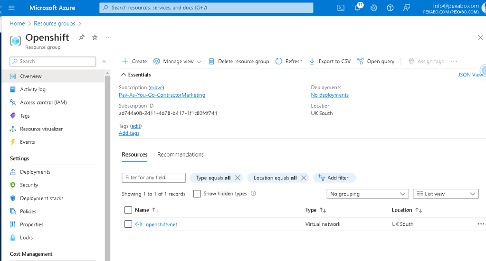
az network dns zone create --name $domainName --resource-group $resourceGroupName
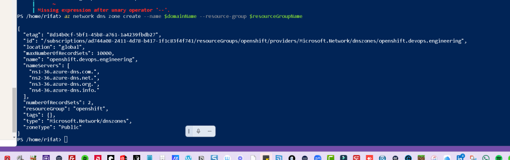
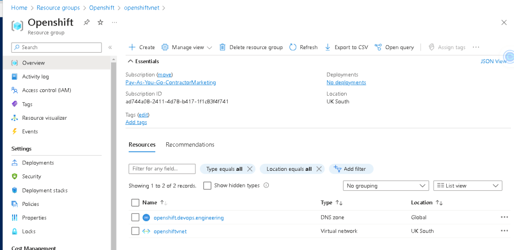
az account set --subscription ad744a08-2411-4d78-b417-1f1c83f4f741
**correct one
**az account set --subscription 2cb217c1-366d-41c0-8934-3f82869320d8
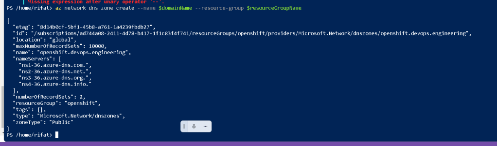
Server desktop in the back
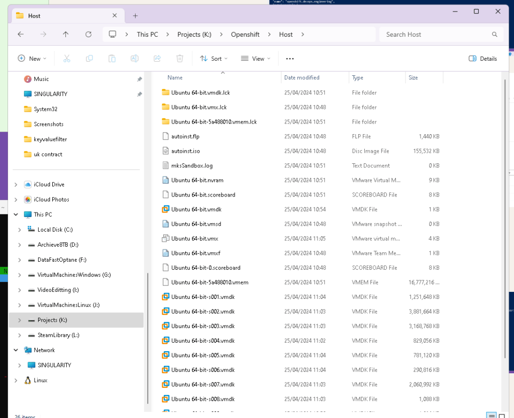
manage more visual
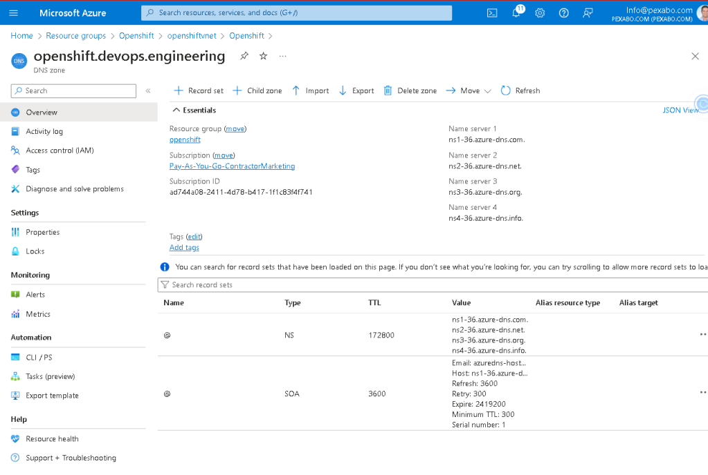
To set a specific Azure subscription as the default using its subscription ID, you can use the Azure CLI. Here's the command to set the default subscription:
az account set --subscription ad744a08-2411-4d78-b417-1f1c83f4f741
This command tells Azure CLI to use the subscription with the ID ad744a08-2411-4d78-b417-1f1c83f4f741 for all subsequent operations in the current session or until you change the subscription again. Ensure that you're logged into the Azure CLI with an account that has access to this subscription.
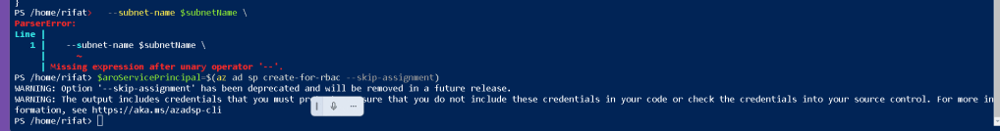
use exho to extract
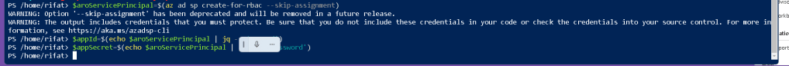
one primpt as asistant learn more and more use cases
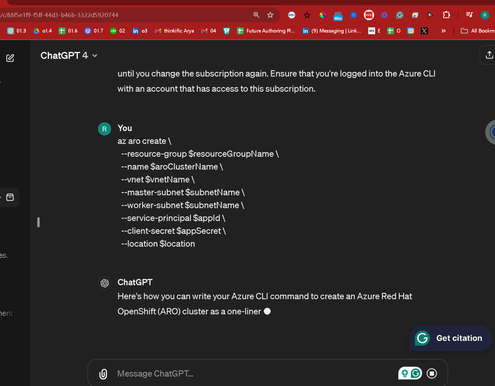
az aro create --resource-group $resourceGroupName --name $aroClusterName --vnet $vnetName --master-subnet $subnetName --worker-subnet $subnetName --service-principal $appId --client-secret $appSecret --location $location
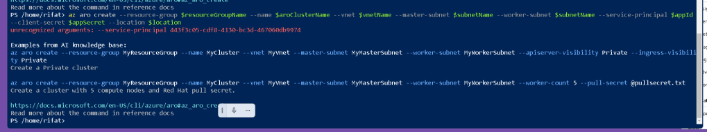
It seems like there's an issue with the use of --service-principal and --client-secret flags in the az aro create command, possibly due to a syntax error or the way these arguments are handled in your Azure CLI environment.
Let's review the typical command structure for creating an Azure Red Hat OpenShift (ARO) cluster with the Azure CLI, focusing on service principal credentials. In some versions of the CLI or in certain configurations, the correct flags for these might differ, or the Azure CLI version you're using might not recognize the flags if there's a typo or an update.
Here's the standard way to specify these details in an ARO creation command:
az aro create --resource-group $resourceGroupName --name $aroClusterName --vnet $vnetName --master-subnet $subnetName --worker-subnet $subnetName --client-id $appId --client-secret $appSecret --location $location
Key Changes:
- Use
--client-idinstead of--service-principalfor specifying the application (client) ID of the service principal.
If you're still encountering issues, make sure:
- Azure CLI is updated: Your Azure CLI might be outdated, which can lead to unrecognized argument errors. Update it using:
az upgrade
-
Correct usage of variables: Ensure all your variables (
$resourceGroupName,$aroClusterName,$vnetName,$subnetName,$appId,$appSecret,$location) are defined in your session. In PowerShell, they should be prefixed with$and set correctly. -
Service Principal Permissions: Verify that the service principal has adequate permissions to perform the operation and that the client ID and client secret are correct.
You can check which parameters are available and their correct syntax by running:
az aro create --help
This will display all the acceptable parameters for the az aro create command in your current Azure CLI version, ensuring you're using the correct argument names and formats.
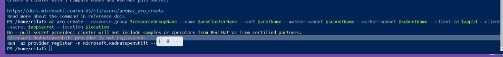
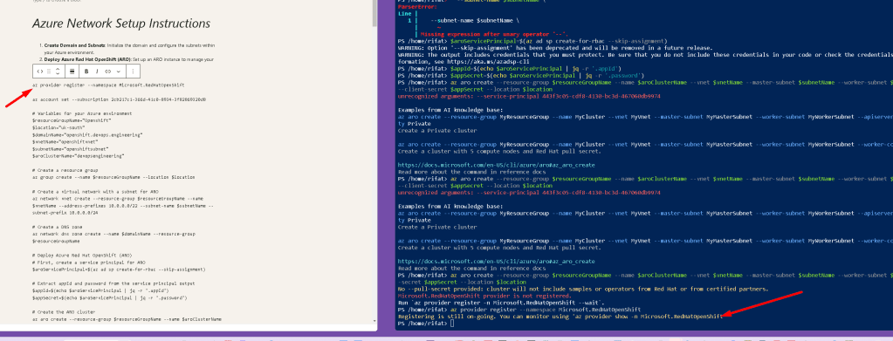
The message you're seeing indicates two main issues that need addressing before successfully creating an Azure Red Hat OpenShift (ARO) cluster:
-
Missing Pull Secret: A pull secret is necessary for accessing Red Hat’s registry to download OpenShift and related images. Without it, the cluster won’t have access to Red Hat’s certified operators or samples.
-
Provider Registration: Before you can create ARO clusters, you must ensure that the
Microsoft.RedHatOpenShiftprovider is registered with your Azure subscription.
Here’s how you can resolve these issues:
1. Register the Microsoft.RedHatOpenShift provider
You need to register the required Azure provider for ARO if it's not already registered. You can do this with the following PowerShell command:
az provider register --namespace Microsoft.RedHatOpenShift
2. Obtain a Pull Secret
To get a pull secret:
-
Go to the Red Hat OpenShift Cluster Manager site.
-
Log in with your Red Hat account (or create one if you don’t already have it).
-
There should be an option to copy the pull secret directly from the website.
3. Update Your Command to Include the Pull Secret
After obtaining the pull secret, include it in your command. It’s a large JSON string, so it’s often best to save it to a file and reference that file in your command.
Here's an example of how to execute the command with a pull secret from a file:
$pullSecret = Get-Content -Path 'C:\path\to\your\pull-secret.txt' -Raw
az aro create --resource-group $resourceGroupName
--name $aroClusterName --vnet $vnetName
--master-subnet $subnetName --worker-subnet $subnetName
--client-id $appId --client-secret $appSecret
--pull-secret $pullSecret `
--location $location
Final Note
Make sure all variables ($resourceGroupName, $aroClusterName, $vnetName, $subnetName, $appId, $appSecret, and $location) are properly defined in your PowerShell session. You might need to check and ensure that each one is set correctly before running the command.
Also, keep in mind that the Azure CLI and PowerShell require accurate handling of spaces and line continuations (). If the command spans multiple lines, use the backtick () at the end of each line to indicate continuation. If you prefer, you can put the whole command on one line, but it may reduce readability.
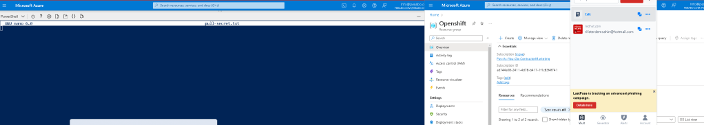
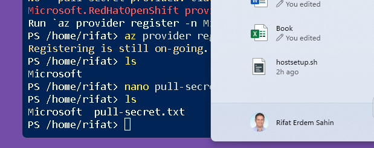
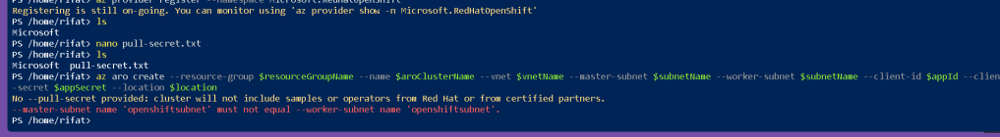
The error message you're seeing indicates that you've set the same subnet name for both the master and worker nodes, which is not allowed in an Azure Red Hat OpenShift (ARO) deployment. Each node type must have its own dedicated subnet.
Here's how you can fix the issue:
- Create Separate Subnets: You need to define separate subnets for the master and worker nodes in your virtual network. If you haven't already created these subnets, you can do so using the Azure CLI:
# Define variables for subnet names
$masterSubnetName = "MasterSubnet"
$workerSubnetName = "WorkerSubnet"
# Create master subnet
az network vnet subnet create --resource-group $resourceGroupName
--vnet-name $vnetName --name $masterSubnetName
--address-prefixes 10.0.0.0/24
# Create worker subnet
az network vnet subnet create --resource-group $resourceGroupName
--vnet-name $vnetName --name $workerSubnetName
--address-prefixes 10.0.1.0/24
- Update Your ARO Create Command: Once you have separate subnets, make sure to update your
az aro createcommand to reference these newly created subnet names:
az aro create --resource-group $resourceGroupName
--name $aroClusterName --vnet $vnetName
--master-subnet $masterSubnetName --worker-subnet $workerSubnetName
--client-id $appId --client-secret $appSecret
--location $location
- Include the Pull Secret: As mentioned previously, not including the pull secret will limit the functionality of your ARO cluster. If you have your pull secret, you should include it in your command:
$pullSecret = Get-Content -Path 'C:\path\to\your\pull-secret.txt' -Raw
az aro create --resource-group $resourceGroupName
--name $aroClusterName --vnet $vnetName
--master-subnet $masterSubnetName --worker-subnet $workerSubnetName
--client-id $appId --client-secret $appSecret
--pull-secret $pullSecret `
--location $location
Make sure each subnet is properly configured with non-overlapping IP ranges and that all variables are defined accurately in your session. This will help you avoid common configuration errors and ensure that your deployment proceeds smoothly.
Imported from rifaterdemsahin.com · 2024